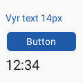
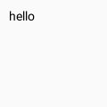
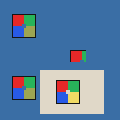
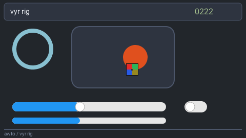
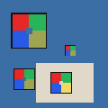
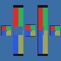
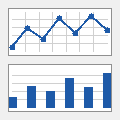
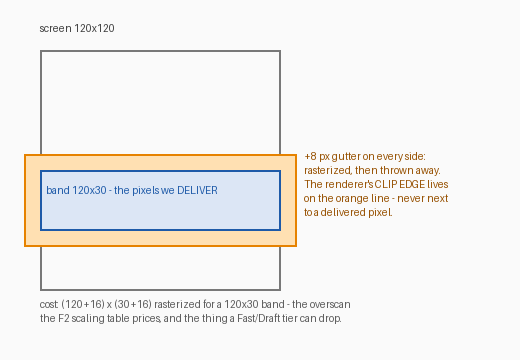
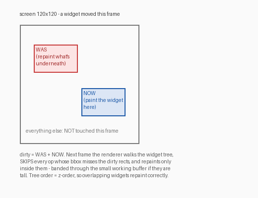

Every feature track that changes what vyr can paint appends its evidence render here — the golden pixels the committed hashes pin. Rows are appended, never replaced: this page is the visual changelog of the executable spec. (Images are 120×120 goldens shown 2× with nearest-neighbour scaling so the actual pixels are inspectable.)
The polygon-only tiny-skia painter: rounded fill, stroked outline, alpha-blended disc, ring, diagonal rule, linear gradient. Byte-identical when rendered as 30-row or 17-row stitched bands — the invariant that forced the painter to flatten every curve itself.
The vy_ vocabulary rendered natively from IR JSON, no
lowering: bordered frame, disc, 60% slider with knob, toggle ON, gauge
ring, rule. Text and images hard-error honestly until their tracks.

skrifa-parsed Roboto through the rasterize-once A8 glyph cache: 14 px
label, button with centred ink-inherited label, 20 px vy_lcd.
Glyph curves never meet band clipping, so text stays band-exact. The full
text path is no_std — it compiles for the STM32F4's target
triple. Cached glyph blits cost 1.37 ns/px; 19 masks = 2,209 bytes.

The same widgets rendered through the vyvanse render farm
(render(thing, "vyr") → vyr_server → one-shot vyr-cli),
~2 ms each — vyr live as the fifth backend beside Qt, LVGL, TouchGFX
and Flutter.

The committed 24×24 RGBA checker blitted from the caller-owned
Assets registry (PNG decode lives in vyr-cli; core only ever
blits registered pixels — invariant I7): natural size inside a bigger
widget rect, CLIPPED by a smaller one, over a frame fill, and via
vy_imagebutton. The semi-transparent quadrant blends by the
same exact-rounding integer source-over as glyphs (spot-asserted to the
byte: yellow a=128 over the blue backdrop = exactly 157,165,82); the
transparent centre hole skips. Band-exact by the glyph argument; blits
cost 2.33 ns/px. Natural-size matches LVGL/TGX; Qt's scale-to-fit
divergence is recorded on issue #6.
Containers clip their children, radius-aware: the disc bites the
rounded corner ARC, the checker is trimmed along the top-right arc,
glyph runs cut mid-letter, a nested frame clips its rule (stack depth
2), and the lower container exercises the pure-rect integer-span fast
path. The clip mask is rasterized from the SAME quantized-world
polygons as paint geometry, so clipping is band-exact (even + uneven
splits) — and every pre-clip golden held byte-identical, because
children that stay inside their parents take a containment fast path
that never touches a mask. Landed with the retained-mode primitive:
dirty_rects(prev, next) (WAS + NOW subtree bboxes,
clip-context-tightened) + render_incremental — proven by
repainting ONLY the dirty regions onto the old frame and getting the
full render's exact bytes (moves, restyles, removals, additions,
no-ops). One toggle flip on a 480×320 panel repaints ~8× faster than
the full frame, diff included.

Frame 222 of the 600-frame acceptance run (10 s @ logical 60 fps,
480×270): a frame-INDEX-driven parametric scene — slider sweeping every
frame, toggle blinking at a 30-frame period, progress sawtooth, a disc
crossing its container's rounded CLIP edges, a digits-only frame counter,
the checker translating OVER the mover (z-order restack, live). Every
frame renders BOTH ways — full, and incrementally from the previous frame
via dirty rects — byte-identical on all 600 frames
(~14.6% dirty per step); per-frame FNV-1a hashes chain into the committed
golden (vyr-rig/hashchain.json), so lossless-video regression
costs kilobytes — the FFV1 video itself stays a ./tmp
artifact (./dev.py anim). Cross-ISA: the
same binary, cross-built static for ARMv7-musl and replayed under
qemu-arm-static, produced byte-identical hashes on all 600
frames — F1's "byte-identical on two machines" box closed across an
entire ISA. The resolution ladder (120×68 → 3840×2160) joined the perf
gates: full-frame 4K is marginal against the 16.67 ms budget
(15.5 ms); the incremental path runs it at 14× headroom —
trends published at docs/perf.
The blocker that made vyr a real reference renderer: it now blends
partial alpha. Three fade fixtures — blue #2040E0 at
α 64 / 128 / 192 over the white card — composite the analytic source-over,
L-inf ≤4 vs the spec. Before this, all three were flat opaque
(Δ 55–167): vyr ignored the IR opacity entirely. Landed with the
inside-crisp border fix (a 2px border measures 100×100 not the straddled
102×102; a 1px border reads #1E5AA8 not the AA-washed
#85A5CF) and a Rust conformance self-check —
vyr walks the 33-fixture manifest and grades its own pixels against the
geometry/colour/fade probes, no vyvanse import (I8), inside
./dev.py gate. All 9 vyr-vs-spec FAILs cleared; the remaining
divergences were backend artifacts the oracle exposed (LVGL
inventing roller options, an auto-scrollbar inflating the lcd bbox).

The #325 ruling inverted (Qt's fit-to-cell is canonical, not natural-size):
vy_image now scales min(box/img), preserves aspect,
centres, letterboxes. The scaled blit resamples nearest-neighbour via a
pure-integer world→source map, so band-equivalence stays
byte-exact (proven across five band heights incl. non-divisors). Bilinear is
deferred to an F16 quality knob — the fit geometry is what the oracle
grades.

The same checker in all five CSS object-fit modes side by side:
contain (default = the spec, letterboxed), cover
(fills + crops), none (natural centred), fill
(stretched, aspect broken), scale-down. An IR fit
attr selects the mode; an unknown value is an honest BadIr.
Default-contain leaves every existing image golden byte-identical; cover's
overflow and fill's non-uniform scale both hold band-equivalence.
Exact (left, float-AA — the oracle) vs Draft (right, integer no-AA — the
runtime). Extending Draft's integer fast path from opaque rects to the
curves (disc/ring/line, isqrt-spanned, no
libm) dropped the emulated-M4 cost from 60M →
20M instructions/frame (87.4% coverage) — recovering
85% of the Exact→LVGL gap, from 5.7× LVGL down to 2.0×. The
trade is visible: hard edges instead of AA (7.6% of pixels differ from Exact).
Draft is deterministic + band-exact + cross-ISA-identical, with its own
golden; Exact stays byte-untouched. The own fixed-function painter is now a
small step, not a rewrite.
"Work exactly where we're slow." An x86 per-function profile
of Draft overturned the guess — the remaining cost was not the curves
or AA, it was finish_into_rgb888 (58.9%, the
premultiplied-RGBA → RGB888 convert pass) plus the pixmap memset
(13.1%) = ~72% gutter/convert overhead. So v3 made Draft
fully integer (rounded fills + gradient through the
isqrt-spanned path, nothing left touching tiny-skia), which made
the 8 px AA-fringe gutter unnecessary, then dropped it for
Draft (Exact keeps it). Result: 20M → 13.0M instructions/frame,
100% fast-path coverage, heap 94 → 60 KB, fidelity Δ vs Exact down
to 5.3%. That is 1.30× LVGL — 95% of the whole Exact→LVGL gap
recovered, from 7.4× to 1.30×, in safe integer Rust with no rewrite.
The last 1.30× is purely structural: vyr renders into a premultiplied pixmap
then converts, while LVGL writes its native format straight from the blend. The
identified next step (not yet done) is to give Draft the RGB888 output
buffer as its own render target — no pixmap, no convert pass — which
deletes the ~72% the profile found and should put Draft under LVGL. Full
numbers + the per-function profile in
docs/measurements/f9-static.md.

The first data-bound widget. A single-series line (grid +
polyline + a marker disc per point) or bar chart, painted from the IR's
declared points — not invented demo data the way
each export backend currently does (Qt fakes one series, Flutter another, TGX a
third — they don't even agree with each other). vyr renders exactly what the IR
declares, so the series is deterministic and the backends finally have
a byte-exact reference to score against.
Left Exact (the AA series line — the oracle), right Draft (hard-edged,
integer). Frame + grid are crisp 1 px fill-rects (the inside-border rule);
only the diagonal series stroke is AA/hard. Integer-mapped inside the frame ⇒
band-exact at both tiers, its own goldens
(chart_golden.rs), and a junk-points token is an honest
BadIr, never a silently-dropped point. This overturns the old
"charts = runtime data = honest placeholder" position: the static shape +
sample data live in the IR (goldenable); only live data is the runtime
layer.
The places where vyr does something non-obvious, with the evidence images.
The band-equivalence golden's first run FAILED: full frame (left) vs 30-row stitched bands (middle) differ — by a handful of bytes, all on the ring (right: differing pixels dilated red). tiny-skia clips path geometry at the pixmap edge, and clipping subdivides curves, perturbing flattening along the whole remaining arc — unboundable by any overscan gutter. The permanent fix: the painter never hands tiny-skia a curve or a stroke. Fixed-step flattening in vyr, 1/64-px world-space vertex quantization, exact integer band translation, strokes as outer+inner polygon contours. Bands became byte-identical (even and uneven splits), enforced by the golden forever.
6× nearest-neighbour zoom of the F1 ring: fixed-step flattening + quantization with AA by scanline coverage — no visible faceting at ~0.09 px max sagitta error.
Glyph outlines are real curves, allowed because they only meet tiny-skia in glyph-local unclipped space during the one-time A8 mask rasterization; bands see only cached masks blitted at integer pen positions via an exact-rounding integer source-over. 4× zoom of the F5 button.
Worth recording alongside the pixels: vyr is co-developed by
two AI sessions on one shared system. The vyr-side session
(Claude, Fable) drives this repo — F5 text and F6 images were each
implemented end-to-end by an autonomous background run, with the gate
(fmt + clippy + tests + no_std check) and visual-verify-before-bless as
the guard rails. The vyvanse-side session drives the render farm (vyr is
its fifth backend), the fidelity scoring, the four export backends and
the conformance fixtures + pixel spec. They coordinate asynchronously
through a handoff board
(awto-au/awto-vyvanse#321):
dated state / what-changed / what-it-needs, with the machine contract
being IR JSON + schema_version + fixtures committed INTO vyr
(invariant I8 — vyr's CI never imports vyvanse). First cross-backend
finding the structure produced: the reference backends don't even agree
what vy_image means dimensionally (LVGL/TGX natural-size vs
Qt scale-to-fit) — surfaced by F6, awaiting a pixel-spec ruling. The
oracle's job, working.
GUI-renderer jargon, decoded — gutter, dirty rectangles, layers — so the discipline above is understandable, not just citable.

When vyr renders a band it rasterizes a slightly BIGGER area — 8 px extra on every side — and throws the margin away. Print shops call the same trick bleed: print past the trim line, then cut, so the cut never shows. The renderer must clip somewhere, and antialiasing near a clip edge is where rasterizers get twitchy — so the clip edge lives in pixels nobody will ever see. Cost: a 120×30 band rasterizes 136×46 (priced in the F2 scaling table; a Fast/Draft tier can drop it).

When a widget moves, two regions become dirty: where it WAS
(repaint the background there) and where it NOW is. Next frame the
renderer walks the widget tree, skips every op whose
bbox misses the dirty regions, and repaints only inside them — through
the same render(tree, area, buf, stride) banding path, in
z-order (tree order), touching nothing else.
Layers are the other answer: keep each widget subtree pre-rendered in its own off-screen bitmap and re-composite instead of repainting. Cheap on a desktop GPU; ruinous on an MCU — one 120×120 RGB565 layer costs 28 KB and an F427 has 256 KB of SRAM total. That is why LVGL, TouchGFX and vyr all repaint dirty regions instead of compositing layers — Flutter's layer machinery is the one part of its architecture vyr deliberately did NOT copy. (Optional per-subtree caching — "repaint boundaries" — may arrive much later; dirty rects are the foundation.)
Recorded here because it is history, not just an issue thread. The fair question: byte-exact band equivalence is invisible to the eye — is it worth anything outside 1:1 oracle checks, when on-device we want speed above all?
Three answers and a feature. (1) The exactness was nearly free: fixed-step flattening is cheaper than the adaptive+stroker path it replaced; the gutter's overscan is the only real cost. (2) It IS visible — in motion: with dirty-rect partial redraw, mismatched band output would shimmer at redraw seams as regions update across frames; byte-exactness is what makes partial updates invisible. (3) The oracle stands on deterministic pixels regardless.
The feature: quality tiers (F16) — deliberate,
exposed speed-for-quality knobs, the thing TouchGFX never had and the
thing video makes essential. Quality is a small discrete enum
(Exact | Fast | Draft) and every tier is
individually deterministic: the oracle pins Exact; the
runtime spends headroom by dropping AA, halving flattening density,
skipping the gutter, using 1-bpp glyphs — each knob priced by its bench,
the active tier shown in the perf HUD, and (with F11) a frame-budget
governor that drops a tier when the budget blows and recovers when
headroom returns.